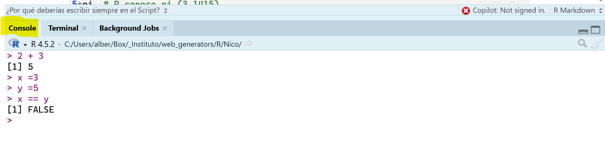

2: Archivos y ventanas de RStudio
R es un lenguaje de programación y un entorno de software utilizado principalmente para el análisis estadístico y la visualización de datos. Sin embargo, también se puede utilizar como una calculadora avanzada.
2.1 Tipos de archivos
2.1.1. Archivos .R (Scripts puros)
Es un archivo de código plano.
- Contenido: Solo puedes escribir código de R. Si
escribes texto normal (como una frase), R te dará un error a menos que
lo pongas detrás de un símbolo
#(comentario). - Uso: Ideal para crear funciones, limpiar datos a gran escala o automatizar procesos que no necesitan explicaciones textuales.
- Ejecución: Ejecutas línea por línea o bloques de
código seleccionados con
Ctrl + Enter.
2.1.2. Archivos .Rmd (R Markdown)
Es un archivo de documento dinámico.
- Contenido: Es una mezcla de texto enriquecido (Markdown) y bloques de código (Chunks). Puedes escribir un informe completo, explicar qué hace tu código y mostrar los resultados (gráficos, tablas) en el mismo sitio.
- Uso: Es el estándar de oro para reportes, tareas, artículos científicos o presentaciones.
- Ejecución: Se “compila” entero mediante el botón Knit. El resultado final no es solo código, sino un documento terminado en formato HTML, PDF o Word.
2.1.3. Cómo los diferencia RStudio?
| Característica | Archivo .R |
Archivo .Rmd |
|---|---|---|
| Idioma principal | Código R | Markdown (texto) + bloques de código |
| Para escribir texto | Necesitas # en cada línea |
Escribes libremente sin símbolos |
| Resultado final | El código ejecutado | Un documento legible (reporte) |
| Botón clave | Source (ejecuta todo) | Knit (crea el documento) |
Un consejo práctico:
Si estás empezando, te recomiendo usar
.Rmd la mayor parte del tiempo.
¿Por qué? Porque al escribir código, a menudo olvidamos
qué hacíamos hace dos semanas. En un .Rmd puedes
escribir:
“Este bloque sirve para calcular el promedio de los empleados de la empresa…” …y debajo poner el código. Eso te ayuda a ti mismo (y a otros) a entender tu propio trabajo sin tener que descifrar cada línea de código.
¿Te sientes más cómodo escribiendo en un formato de “documento”
(.Rmd) o prefieres la simplicidad de un script
(.R)?
Abre R o RStudio. Deberías ver una consola donde puedes ingresar comandos de R.
2.3 La ventana de consola y la ventana de script
2.3.1. La ventana Consola
La consola es el motor operativo de RStudio, diseñado exclusivamente para la ejecución dinámica y temporal de código. Aunque es la herramienta donde observas el resultado de tus operaciones, es un error tratarla como un lugar de almacenamiento.
La consola funciona bajo una lógica de “pizarra blanca”: está hecha para probar ideas, verificar funciones rápidamente, detectar errores de forma inmediata, o incluso, para instalar paquetes. Sin embargo, carece de una función de guardado automático para el usuario. Al cerrar RStudio, todo el contenido de la consola se pierde de manera definitiva.

En definitival podemos considerar la consola como una calculadora rápida de R que ejecuta línea a línea al pulsar CTRL + ENTER.
## [1] 5## [1] 4## [1] 9## [1] 12## [1] 8## [1] 9## [1] 15.707962.3.2. La ventana de Script
La ventana de Script es la ventana/editor más versátil de RStudio. Es el “taller” de RStudio. Mientras que :
la *Consola** es donde pruebas cosas rápidas y ves los resultados,
el *Script** es donde escribes tus programas, guardas tu código y lo haces reproducible.

Si estás trabajando en RMarkdown (.Rmd), tu ventana de script es la que tiene el fondo blanco donde escribes el texto y los bloques de código ```{r}.
Los archivos guardados en esta ventana tienen la extenxión .rmd y combinan bloques de texto con bloques de código.
¿Por qué deberías escribir siempre en el Script?
**Persistencia**: Si cierras RStudio, todo lo que escribiste en la Consola se pierde. Lo que guardas en un archivo de Script (.R) o RMarkdown (.Rmd) se queda ahí para siempre.
**Edición**: Es mucho más fácil corregir un error de dedo en un script que intentar editar una línea que ya ejecutaste en la consola.
**Reproducibilidad**: Puedes compartir tu archivo .Rmd con otra persona, y ellos podrán ejecutarlo y obtener los mismos resultados que tú.
Los ficheros script de R se pueden guardar utilizando Archivo → Guardar como… y eligiendo a continuación la ubicación que interesa en el disco duro del ordenador.
Por defecto R utiliza una carpeta de trabajo donde guardará la información.
getwd() # devuelve la carpeta de trabajo
# Cambiar la carpeta de trabajo
setwd("/ruta/a/tu/carpeta")
# Ejemplo en Windows
setwd("c:/")Funciones y Operadores en R
Funciones principales
| Función | Código en R |
|---|---|
| Raíz cuadrada de x | sqrt(x) |
| Exponencial de x | exp(x) |
| Logaritmo neperiano | log(x) |
| Nº de elementos de un vector | length(x) |
| Suma los elementos del vector | sum(x) |
| Seno de x | sin(x) |
| Coseno de x | cos(x) |
| Tangente de x | tan(x) |
| Media | mean(x) |
| Desviación típica | sd(x) |
| Varianza | var(x) |
| Mediana | median(x) |
| Quantiles | quantile(x, p) |
| Máximo y Mínimo | range(x) |
| Ordenación | sort(x) |
| Resumen estadístico | summary(x) |
Ejemplos:
## [1] 4## [1] 8886111length(mivector)
mean(mivector)Operadores en R
Aritméticos
| Operador | Descripción |
|---|---|
+ |
Suma |
- |
Resta |
* |
Multiplicación |
/ |
División |
^ |
Potencia |
%/% |
División entera |
Comparativos
| Operador | Descripción |
|---|---|
== |
Igualdad |
!= |
Diferente de |
< |
Menor que |
> |
Mayor que |
<= |
Menor o igual |
>= |
Mayor o igual |
Lógicos
| Operador | Descripción |
|---|---|
& |
Y lógico |
| |
O lógico |
! |
No lógico |
Ejemplos con operadores
## [1] 1## [1] 10## [1] 1## [1] 3## [1] 1 10## [1] 4.75## [1] 4## [1] 19## [1] 2 10 20 6## [1] FALSE TRUE FALSE FALSE## [1] FALSE FALSE FALSE FALSE## [1] TRUE TRUE FALSE FALSE## [1] FALSE## [1] FALSE## [1] TRUEAsignación de variables
resultado_suma <- 5 + 3
resultado_resta <- 10 - 2
resultado_multiplicacion <- 4 * 6
resultado_division <- 20 / 5
resultado_potenciacion <- 2^3
print(resultado_suma)## [1] 8Tipos de datos básicos
x1 <- TRUE # logical
x2 <- 3L # integer
x3 <- 3.4 # numeric
x5 <- "Esto es una cadena de caracteres" # character
ls.str()## datos : num [1:4] 1 5 10 3
## resultado_division : num 4
## resultado_multiplicacion : num 24
## resultado_potenciacion : num 8
## resultado_resta : num 8
## resultado_suma : num 8
## x : num 16
## x1 : logi TRUE
## x2 : int 3
## x3 : num 3.4
## x5 : chr "Esto es una cadena de caracteres"## [1] 1## [1] 3## [1] FALSE## [1] TRUE## [1] TRUE